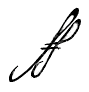
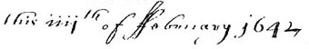
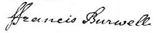
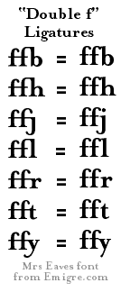

Old Style Handwriting and
Printers’ Ligatures, &c.
The Handwritten Leading Double “f,” a.k.a., “ff”
&
the Printers’ “ff” Ligatures.
 The
handwritten leading Double “f,”
a.k.a., “ff” has the appearance of “ff” and is
seen in many colonial documents. It is a actually a capital
“F.” Ivor Noël Hume wrote in his book The Virginia Adventure,
“. . . where the ff means a capital F [,] I have used the latter . . .”

Here we see the Double
“ff” in context, from an 1642 Virginia
Land Patent.. It would read, “this fourth of February 1642.” (Also
notice the
Roman numeral “iiij” which is
“4th”. Try this
Combs &c. link for more information on
Interpreting Roman Numerals.)
 The
name of “Francis Burwell,”
from an 1648 Virginia Land Patent. (The name is a clerk’s copy, not an
autograph.)
The Printers’ “ff”
Ligatures
 These
are some Double “f”
ligatures used by printers and will be found mostly in old books, and occasionally in
modern fine press books. These ligatures are not directly related to the
handwritten examples of the leading Double “f” given
above.
Thanks to Carole Hammett for her expert help
with the handwritten leading “ff.”
| |